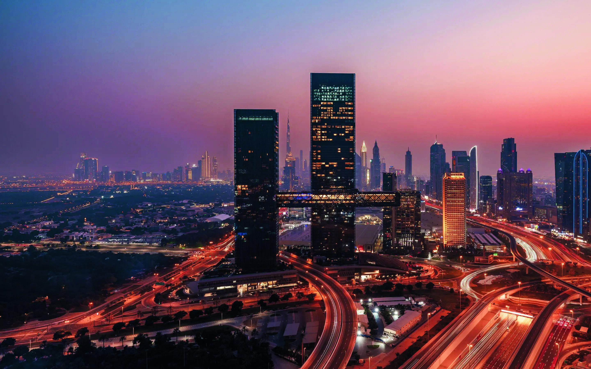

Project reference photo ↗01 / Mixed-use high-rise · DubaiOne Za’abeel Tower A
Low Delta-T across multiple circuits drove excess flow and elevated pumping demand in an operating high-rise.
reduction in pumping energy
My approach
Led hydraulic diagnosis, terminal-unit rectification, PICV optimization, differential-pressure reset and demand-based pump sequencing. Refined BMS control logic and verified results using power-monitoring data.
The result
218,674 kWh saved across the September–December comparison period. Circuit C Delta-T increased from 4.6°C to 8.7°C; Circuit A improved from 3.1°C to 8.1°C.
Measurement basis & project context
Reported PMU comparison: September–December 2024 baseline versus September–December 2025 after optimization. This is pumping electricity, not whole-building energy.
88.36 tCO₂e reduction over the comparison period. The case study’s annualized carbon estimate is 265.09 tCO₂e/year.
Source: One Za’abeel case study, pp. 6, 8–10